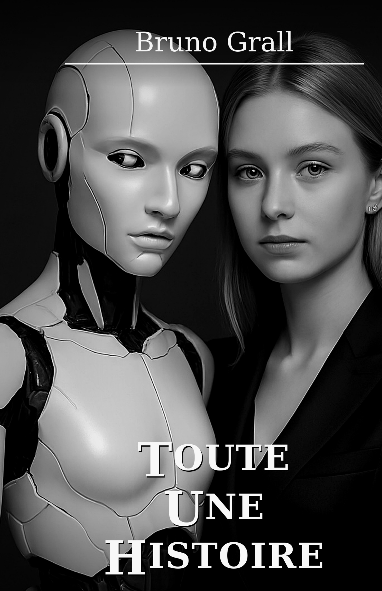
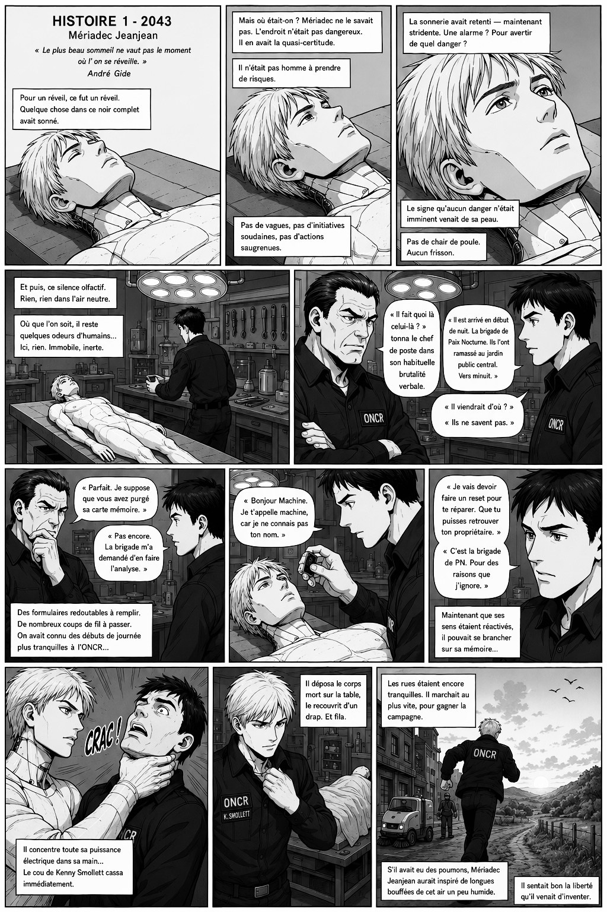

Bruno
Grall
Un auteur du réel qui bascule.
Bruno Grall est l’auteur de trois romans, un quatrième s’écrit tranquillement. Ses textes explorent les rapports humains, les dérèglements du monde contemporain et les zones d’incertitude où le réel bascule vers l’étrange ou l’anticipation.
Livres

Toute une histoire
Toute une histoire explore, avec sensibilité et ironie, les trajectoires croisées d’hommes et de femmes pris dans le tumulte d’une époque incertaine. Kim, jeune enseignante, croyait sa vie bien tracée avant qu’un amour inattendu ne vienne tout bouleverser. Sophie Crux, conseillère de ministre, femme de raison et de pouvoir, se retrouve déstabilisée au cœur d’une province qu’elle ne comprend pas. Adélaïde d’Orléans, entrepreneuse brillante et conquérante, voit son ascension fulgurante révéler les failles d’un monde où l’ambition ne suffit pas toujours. Mériadec, être insaisissable, choisit la marge pour échapper aux règles d’une société de plus en plus méfiante envers la différence. Sur fond de solitude grandissante, de promesses technologiques et de faux-semblants politiques, Toute une histoire questionne ce qui relie encore les individus, ce qui les sauve, et ce qui finit par les perdre. Et vous, jusqu’où iriez-vous pour rester libre ?
Disponible sur AmazonLire le chapitre 1Bonus - Chapitre 1 en manga


Jours agités, nuits blanches
Rencontre d’un autre genre. Ainsi aurait pu s’appeler cette fiction mettant en scène un célibataire esseulé qui choisit de vivre dans la maison où rode le fantôme de sa mère.
Sa vie s’organise tranquillement à l’abri des rencontres inutiles, des conversations superfétatoires, des relations sociales aussi obligatoires que sans lendemain. Le bonheur sans les autres, c’est beaucoup dire, la tranquillité sans personne serait plus juste. Libéré des interférences, les jours ou plutôt les nuits se succèdent tranquillement, presque mollement, sans passion.
Jusqu’à ce que ce bel assemblage soit bousculé…

À vendre, appartement vue sur le port
À vendre, appartement vue sur le port est roman policier à double fond, construit comme un objet littéraire biface : une même intrigue criminelle racontée d’abord dans une veine plus sobre, tendue, presque classique, puis reprise en Face B dans une langue plus gouailleuse, nerveuse. Le point de départ : Antoine Parker, professeur de lettres bientôt quinquagénaire, est retrouvé mort dans son appartement d’une marina méditerranéenne, porte fermée, téléphone sonnant sur l’oreiller, volets clos. Tout semble d’abord pouvoir relever de la mort naturelle, voire du suicide, mais les détails résistent : médicaments, serrure, valise à double fond, indices discrets, relations troubles. Autour de lui gravitent son frère Nicolas, la mère Marie, l’ami Fidélius, le concierge Barazer, l’OPJ Macquart, et surtout Christophe Versailles, figure équivoque, possible amant, possible prédateur, possible meurtrier. Le roman avance ainsi entre enquête policière, mensonges familiaux, désir, argent, maladie, héritage et vengeance.
Face A - Volets closFace B - Port La Galère
Refuge
Roman en cours d'écriture
Quatrième roman en cours d'écriture. Un refuge de montagne isolé, une chapelle improbable, un sentier qui bascule entre France et Italie. Premier extrait disponible.

À propos
Bruno GRALL vit entre Nice et Quimper.
Nice pour le joli temps bleu, les bruits du sud, les huiles d’olives et la mer transparente et Quimper pour ses pluies et ses tempêtes d’hiver sur la côte, ses langoustines mayonnaise et sa tranquillité cosy.
Il aime les dialogues qui grincent, les personnages qu’on croit connaître, et les histoires qu’on aimerait fausses.
Il a exercé plusieurs métiers en lien avec les mots et les gens. Aujourd’hui, il les fait parler — avec liberté, ironie et tendresse.
Contacter l'auteur
N'hésitez pas à m'écrire, je lis tous les mots de lecteurs avec plaisir.
J'offre le PDF de mes ouvrages sur simple demande.
Cette adresse est dédiée aux lecteurs.